total_exports <- read_wits_turkey_data_only %>%group_by(year) %>%summarize(total_exports =sum(trade_value_usd_exp))total_imports <- read_wits_turkey_data_only %>%group_by(year) %>%summarize(total_imports =sum(trade_value_usd_imp))# Visualize exports and imports over the yearsggplot() +geom_line(data = total_exports, aes(x = year, y = total_exports, color ="Exports"), size =1.5) +geom_line(data = total_imports, aes(x = year, y = total_imports, color ="Imports"), size =1.5) +labs(title ="Turkey's Exports and Imports Over the Years", x ="Year", y ="Trade Value (mn USD)") +scale_y_continuous(labels = scales::comma_format(scale =1e-6)) # Format y-axis labels as millions
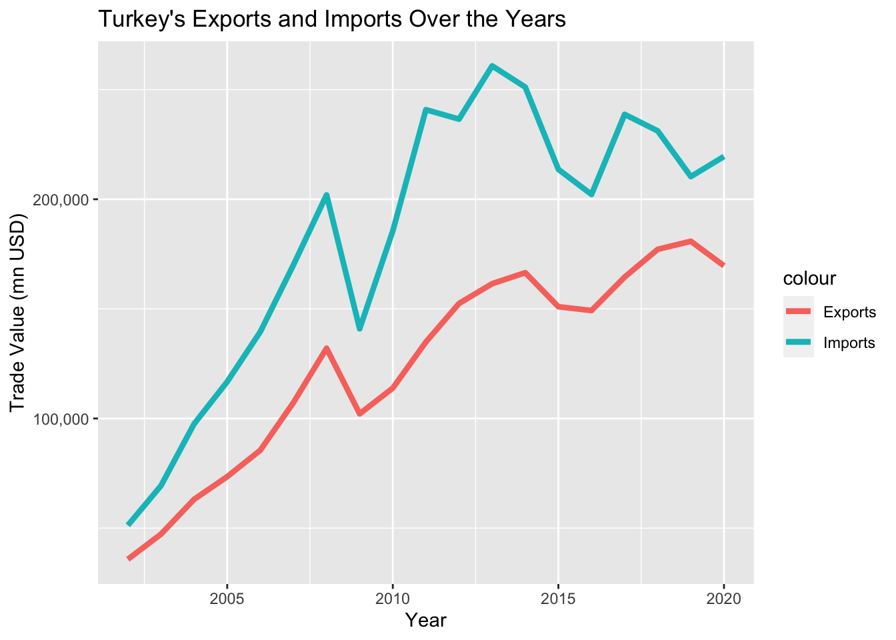
5.1.2 Exports & Imports Analysis
# Calculate total trade for each yearyearly_trade <- read_wits_turkey_data_with_partners %>%group_by(year) %>%summarize(total_trade =sum(trade_value_usd_exp + trade_value_usd_imp)) %>%arrange(desc(year)) # Calculate total export and import for each yearyearly_trade_net <- read_wits_turkey_data_with_partners %>%group_by(year) %>%summarize(total_export =sum(trade_value_usd_exp),total_import =sum(trade_value_usd_imp)) %>%arrange(desc(year))# Calculate the net differenceyearly_trade_net <- yearly_trade_net %>%mutate(trade_difference = total_export - total_import)%>%na.omit() # Visualize import and export by yearggplot(data = yearly_trade_net, aes(x = year)) +geom_bar(aes(y = total_export, fill ="Export"), stat ="identity", position ="dodge", color ="darkgray", linetype ="dashed" ) +geom_bar(aes(y =-total_import , fill ="Import"), stat ="identity", position ="dodge", color ="darkgray", linetype ="dashed") +geom_bar(aes(y = trade_difference , fill =factor(sign(trade_difference))),stat ="identity", position ="dodge", color ="black", alpha=0.7) +labs(title ="Net Trade Position of Turkey",x ="Year", y ="Total Trade Value (mn USD)") +scale_fill_manual(values =c("Export"="gray", "Import"="lightgray","1"="skyblue3", "-1"="lightcoral"),name ="",labels =c("Net importer", "Export", "Import")) +geom_hline(yintercept =0, linetype ="solid", color ="black", size =0.5) +# Add horizontal line at y = 0theme(axis.text.x =element_text(angle =90, hjust =0.5),legend.position ="top") +scale_y_continuous(labels = scales::comma_format(scale =1e-6))
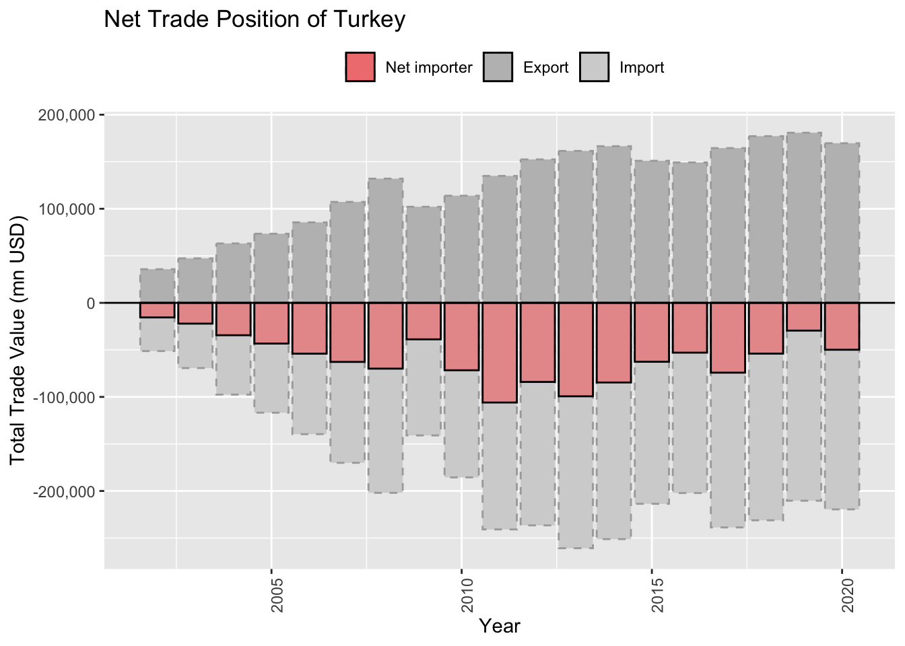
5.1.2.1 Top Export Product Categories
export_plot_data <- read_wits_turkey_data_only %>%group_by(section_name) %>%summarize(total_export =sum(trade_value_usd_exp)/19000000000) %>%top_n(10)# Truncate section names to the first 50 charactersexport_plot_data$truncated_name <-str_trunc(export_plot_data$section_name, 50)# Get distinct truncated names for colorscolor_names <-unique(export_plot_data$truncated_name)# Generate a limited number of distinct colorscolors <-brewer.pal(length(color_names), "Set3")ggplot(data = export_plot_data, aes(x =reorder(section_name, -total_export), y = total_export, fill = truncated_name)) +geom_bar(stat ="identity", color ="black") +geom_text(aes(label =paste0("$",round(total_export), "bn"),y = total_export -3), color ="black", vjust =-0.5) +# Add values above the columnslabs(title ="Top 10 Diversity of Exported Products (2002-2020, Turkey)", x ="Products", y ="Annual Export Value") +geom_hline(yintercept =0, linetype ="solid", color ="black", size =0.5) +# Add horizontal line at y = 0theme(axis.text.x =element_blank(), axis.title.x =element_blank(), legend.position ="bottom") +guides(fill =guide_legend(nrow =5)) +scale_fill_manual(values =setNames(colors, color_names), name ="")
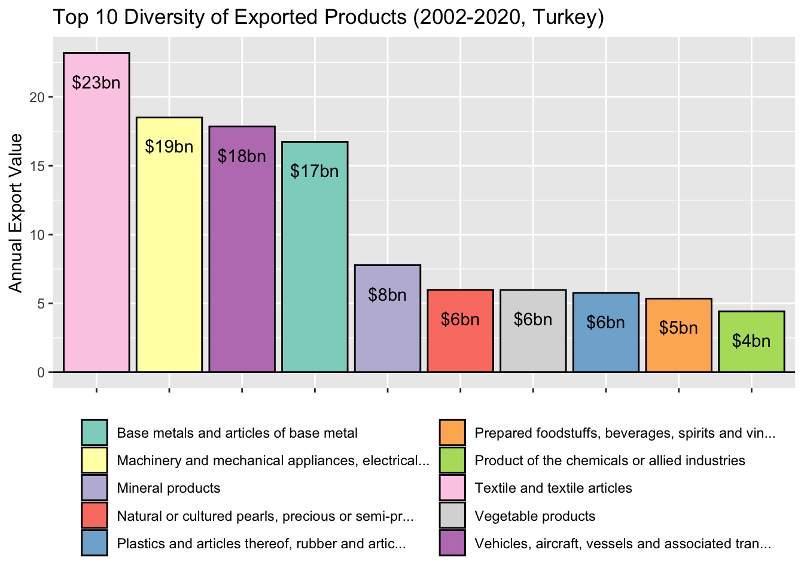
5.1.2.2 Top Export Product Categories
top_exports_products <- read_wits_turkey_data_only %>%group_by(section_name) %>%summarize(total_export =sum(trade_value_usd_exp)/19) %>%top_n(9)%>%na.omit() top_exports_products <- top_exports_products %>%mutate(section_name =case_when(str_detect(section_name, "^Machinery and mechanical appliances") ~"Machinery Products",str_detect(section_name, "^Base metals") ~"Base Metal Products",str_detect(section_name, "^Natural or") ~"Natural Products",str_detect(section_name, "^Vehicles,") ~"Vehicles Equipment",str_detect(section_name, "^Plastics and articles") ~"Plastics",str_detect(section_name, "^Product of the chemicals") ~"Chemicals",str_detect(section_name, "^Prepared foodstuffs,") ~"Foodstuffs and Tobacco",TRUE~as.character(section_name) ) )read_wits_turkey_data_with_partners_edit <- read_wits_turkey_data_with_partners%>%mutate(section_name =case_when(str_detect(section_name, "^Machinery and mechanical appliances") ~"Machinery Products",str_detect(section_name, "^Base metals") ~"Base Metal Products",str_detect(section_name, "^Natural or") ~"Natural Products",str_detect(section_name, "^Vehicles,") ~"Vehicles Equipment",str_detect(section_name, "^Plastics and articles") ~"Plastics",str_detect(section_name, "^Product of the chemicals") ~"Chemicals",str_detect(section_name, "^Prepared foodstuffs,") ~"Foodstuffs and Tobacco",TRUE~as.character(section_name) ) )# Filter the data with the selected top import productsexport_plot_data <- read_wits_turkey_data_with_partners_edit %>%filter(section_name %in% top_exports_products$section_name)%>%group_by(year, section_name) %>%summarize(total_export =sum(trade_value_usd_exp)) %>%ungroup()# Create the plot with geom_pointggplot(data = export_plot_data, aes(x = year, y = total_export/1000000, color = section_name)) +geom_line(size =1.2) +facet_wrap(~section_name, scales ="free_y", ncol =3, labeller =labeller(NULL)) +labs(title ="Export Trends of Top Products (2002-2020, Turkey)", x ="Year", y ="Annual Export Value (mn USD)") +theme(legend.position ="none") # Remove legend
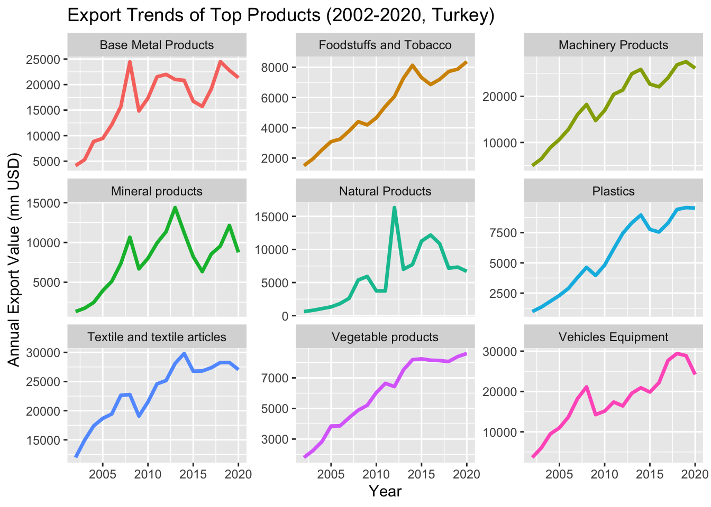
5.1.2.3 Top Import Product Categories
imported_plot_data <- read_wits_turkey_data_only %>%group_by(section_name) %>%summarize(total_import =sum(trade_value_usd_imp)/19000000000) %>%top_n(10)# Truncate section names to the first 20 charactersimported_plot_data$truncated_name <-str_trunc(imported_plot_data$section_name, 50)# Get distinct truncated names for colorscolor_names <-unique(imported_plot_data$truncated_name)# Generate a limited number of distinct colorscolors <-brewer.pal(length(color_names), "Set3")ggplot(data = imported_plot_data, aes(x =reorder(section_name, -total_import), y = total_import, fill = truncated_name)) +geom_bar(stat ="identity", color ="black") +geom_text(aes(label =paste0("$",round(total_import), "bn"),y = total_import-3), color ="black", vjust =-0.5) +# Add values above the columns labs(title ="Top 10 Diversity of Imported Products (2002-2020, Turkey)", x ="Products", y ="Annual Import Value") +geom_hline(yintercept =0, linetype ="solid", color ="black", size =0.5) +# Add horizontal line at y = 0theme(axis.text.x =element_blank(), axis.title.x =element_blank(), legend.position ="bottom") +guides(fill =guide_legend(nrow =5)) +scale_fill_manual(values =setNames(colors, color_names), name ="")
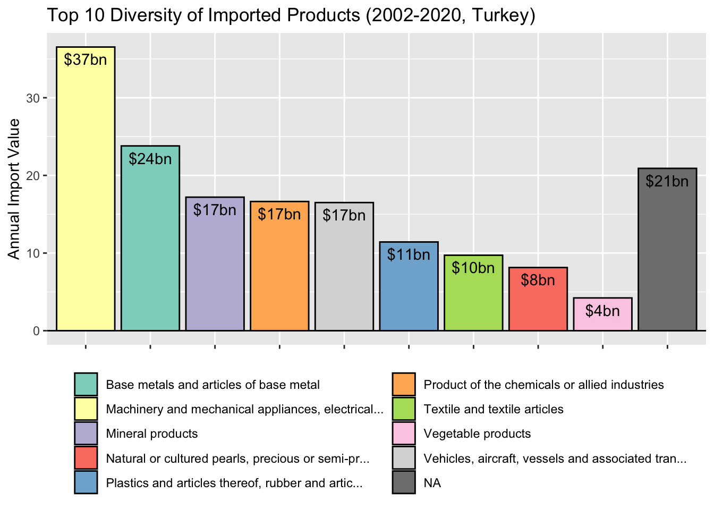
5.1.2.4 Top Import Product Categories
top_import_products <- read_wits_turkey_data_only %>%group_by(section_name) %>%summarize(total_import =sum(trade_value_usd_imp)) %>%top_n(10)%>%na.omit() top_import_products <- top_import_products %>%mutate(section_name =case_when(str_detect(section_name, "^Machinery and mechanical appliances") ~"Machinery Products",str_detect(section_name, "^Base metals") ~"Base Metal Products",str_detect(section_name, "^Natural or") ~"Natural Products",str_detect(section_name, "^Vehicles,") ~"Vehicles Equipment",str_detect(section_name, "^Plastics and articles") ~"Plastics",str_detect(section_name, "^Product of the chemicals") ~"Chemicals",TRUE~as.character(section_name) ) )read_wits_turkey_data_with_partners_edit <- read_wits_turkey_data_with_partners%>%mutate(section_name =case_when(str_detect(section_name, "^Machinery and mechanical appliances") ~"Machinery Products",str_detect(section_name, "^Base metals") ~"Base Metal Products",str_detect(section_name, "^Natural or") ~"Natural Products",str_detect(section_name, "^Vehicles,") ~"Vehicles Equipment",str_detect(section_name, "^Plastics and articles") ~"Plastics",str_detect(section_name, "^Product of the chemicals") ~"Chemicals",TRUE~as.character(section_name) ) )# Filter the data with the selected top import productsimport_plot_data <- read_wits_turkey_data_with_partners_edit %>%filter(section_name %in% top_import_products$section_name) %>%group_by(year, section_name) %>%summarize(total_import =sum(trade_value_usd_imp)) %>%ungroup() # Create the plot with geom_pointggplot(data = import_plot_data, aes(x = year, y = total_import/1000000, color = section_name)) +geom_line(size =1.2) +facet_wrap(~section_name, scales ="free_y", ncol =3, labeller =labeller(NULL)) +labs(title ="Import Trends of Top 9 Products (2002-2020, Turkey)", x ="Year", y ="Import Value") +theme(legend.position ="none") # Remove legend
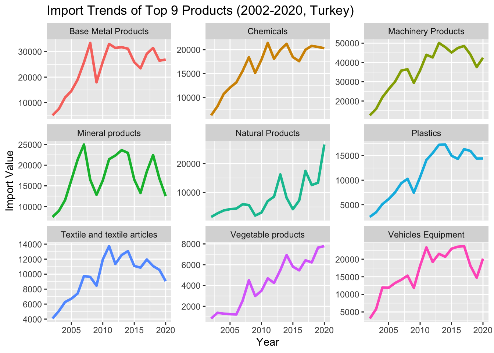
5.1.2.5 Top Import Product Categories
# Calculate total trade for each sectionsections <- read_wits_turkey_data_with_partners %>%group_by(section_name) %>%summarize(total_trade =sum(trade_value_usd_exp + trade_value_usd_imp)) %>%arrange(desc(total_trade)) %>%top_n(10)# Calculate total export and import for each top partnertop_sections <- read_wits_turkey_data_with_partners %>%filter(section_name %in% sections$section_name) %>%group_by(section_name) %>%summarize(total_export =sum(trade_value_usd_exp),total_import =sum(trade_value_usd_imp)) %>%arrange(desc(total_export + total_import)) %>%top_n(10)%>%na.omit() # Calculate the net differencetop_sections <- top_sections %>%mutate(trade_difference = total_export - total_import)%>%na.omit() top_sections <- top_sections %>%mutate(section_name =case_when(str_detect(section_name, "^Machinery and mechanical appliances") ~"Machinery Products",str_detect(section_name, "^Base metals") ~"Base Metal Products",str_detect(section_name, "^Natural or") ~"Natural Products",str_detect(section_name, "^Vehicles,") ~"Vehicles Equipment",str_detect(section_name, "^Plastics and articles") ~"Plastics",str_detect(section_name, "^Product of the chemicals") ~"Chemicals",str_detect(section_name, "^Textile and textile articles") ~"Textiles",str_detect(section_name, "^Vegetable Products") ~"Vegetables",str_detect(section_name, "^Prepared foodstuffs") ~"Foodstuffs and Beverages",TRUE~as.character(section_name) ) )# Visualize import and export relations with top trading partnersggplot(data = top_sections, aes(x =reorder(section_name, -total_export - total_import))) +geom_bar(aes(y = total_export , fill ="Export"), stat ="identity", position ="dodge", color ="darkgray", linetype ="dashed" ) +geom_bar(aes(y =-total_import , fill ="Import"), stat ="identity", position ="dodge", color ="darkgray", linetype ="dashed") +geom_bar(aes(y = trade_difference , fill =factor(sign(trade_difference /1e6))),stat ="identity", position ="dodge", color ="black", alpha =0.7) +labs(title ="Foreign Trade Surplus/Deficit by Top 10 Products",x ="Partner", y ="Total Trade Value (mn USD)") +scale_fill_manual(values =c("Export"="gray", "Import"="lightgray","1"="skyblue3", "-1"="lightcoral"),name ="",labels =c("Turkey net importer", "Turkey net exporter", "Export", "Import")) +geom_hline(yintercept =0, linetype ="solid", color ="black", size =0.5) +# Add horizontal line at y = 0theme(axis.text.x =element_text(angle =90, hjust =0.5),legend.position ="top") +scale_y_continuous(labels = scales::comma_format(scale =1e-6))
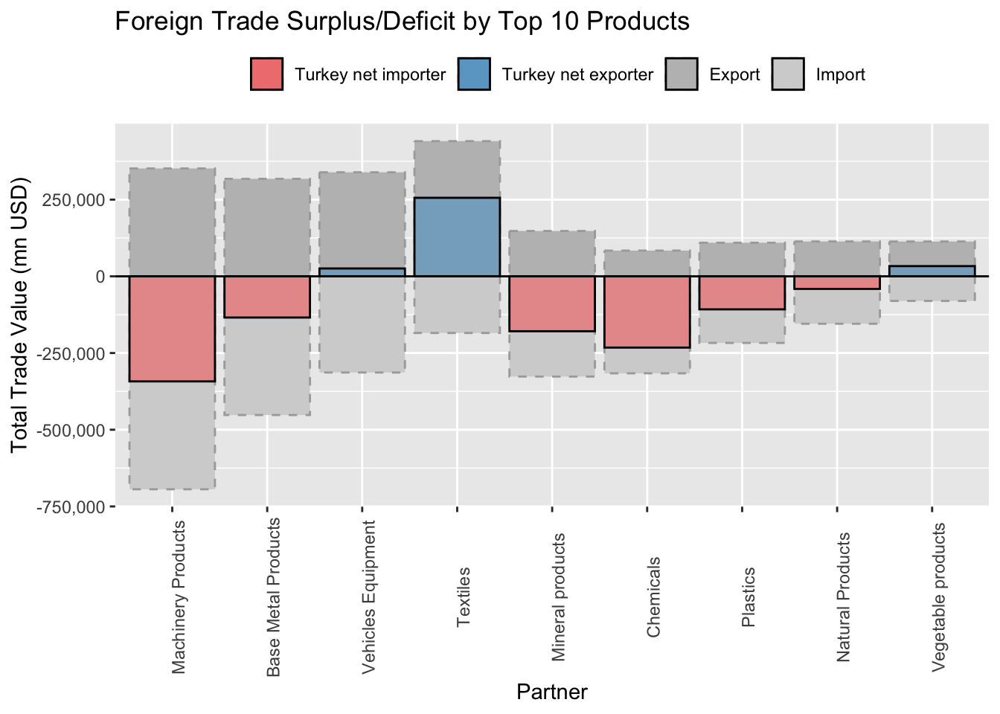
5.1.3 Trade Partnership Analysis
top_partners <- read_wits_turkey_data_with_partners %>%group_by(partner_name) %>%summarize(total_trade =sum(trade_value_usd_exp + trade_value_usd_imp)/19000000000) %>%arrange(desc(total_trade)) %>%top_n(10)# Get a color palette from RColorBrewerpartner_colors <-brewer.pal(length(top_partners$partner_name), "Set3")# Visualize top trading partnersggplot(data = top_partners, aes(x =reorder(partner_name, -total_trade), y = total_trade, fill = partner_name)) +geom_bar(stat ="identity", color ="black") +geom_text(aes(label =paste0("$",round(total_trade), "bn"),y = total_trade-3), color ="black", vjust =-0.5) +# Add values above the columnslabs(title ="Top 10 Trading Partners (2002-2022)", x ="Partner", y ="Annual Trade Value") +geom_hline(yintercept =0, linetype ="solid", color ="black", size =0.5) +# Add horizontal line at y = 0theme(axis.text.x =element_text(angle =90, hjust =1)) +scale_fill_manual(values = partner_colors)+theme(legend.position ="none")
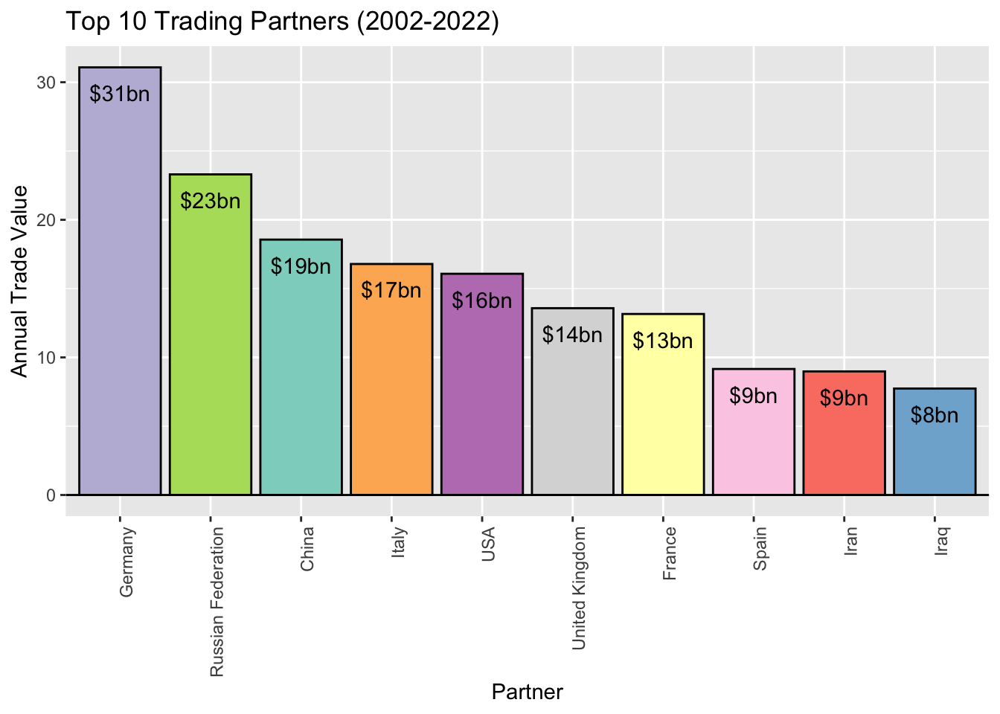
5.1.4 Trade Partnership Analysis
# Calculate total trade for each partnerpartners <- read_wits_turkey_data_with_partners %>%group_by(partner_name) %>%summarize(total_trade =sum(trade_value_usd_exp + trade_value_usd_imp)) %>%arrange(desc(total_trade)) %>%top_n(10)# Calculate total export and import for each top partnertop_partners <- read_wits_turkey_data_with_partners %>%filter(partner_name %in% partners$partner_name) %>%group_by(partner_name) %>%summarize(total_export =sum(trade_value_usd_exp),total_import =sum(trade_value_usd_imp)) %>%arrange(desc(total_export + total_import)) %>%top_n(10)%>%na.omit() # Calculate the net differencetop_partners <- top_partners %>%mutate(trade_difference = total_export - total_import)%>%na.omit() # Visualize import and export relations with top trading partnersggplot(data = top_partners, aes(x =reorder(partner_name, -total_export - total_import))) +geom_bar(aes(y = total_export, fill ="Export"), stat ="identity", position ="dodge",color ="darkgray", linetype ="dashed" ) +geom_bar(aes(y =-total_import, fill ="Import"), stat ="identity", position ="dodge",color ="darkgray", linetype ="dashed") +geom_bar(aes(y = trade_difference, fill =factor(sign(trade_difference/1e6))),stat ="identity", position ="dodge", color ="black", alpha=0.7) +labs(title ="Foreign Trade Surplus/Deficit by Top 10 Partners",x ="Partner", y ="Total Trade Value (mn USD)") +scale_fill_manual(values =c("Export"="gray", "Import"="lightgray","1"="skyblue3", "-1"="lightcoral"),name ="",labels =c("Turkey net importer", "Turkey net exporter", "Export", "Import")) +geom_hline(yintercept =0, linetype ="solid", color ="black", size =0.5) +# Add horizontal line at y = 0theme(axis.text.x =element_text(angle =90, hjust =1),legend.position ="top") +scale_y_continuous(labels = scales::comma_format(scale =1e-6))
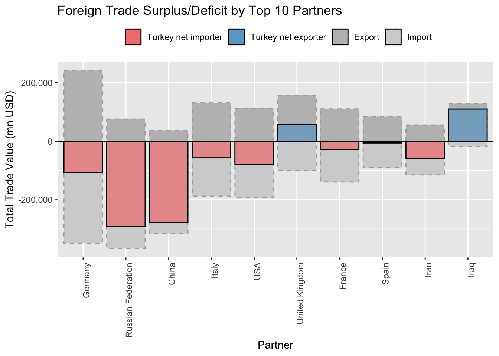
5.1.5 Trade Partnership Analysis
# Vector of countries to filterselected_countries <-c("Germany", "Russian Federation", "China", "Italy", "USA", "United Kingdom", "France", "Spain", "Iran", "Iraq")top_partners <- read_wits_turkey_data_with_partners %>%filter(partner_name %in% selected_countries, year %in%2015:2020) %>%group_by(partner_name, year) %>%summarize(total_export =sum(trade_value_usd_exp),total_import =sum(trade_value_usd_imp)) %>%mutate(trade_difference = total_export - total_import)# Create a bar plot to show trade comparison with selected trading partnersggplot(data = top_partners, aes(x =reorder(partner_name, -trade_difference), y = trade_difference/1000000, fill =factor(sign(trade_difference)))) +geom_bar(stat ="identity", position =position_dodge(width =0.8), color ="black", height =1.5) +# Adjust the 'height' parameterfacet_wrap(~year, scales ="free_y", ncol =3) +scale_fill_manual(values =c("lightcoral", "skyblue3"), name ="",labels =c("Turkey net importer", "Turkey net exporter")) +labs(title ="Trade Comparison with Top 10 Trading Partners(2015-2020)",x ="Partner",y ="Trade Difference (Export - Import, mn USD)") +theme(axis.text.x =element_text(angle =90, hjust =1),legend.position ="top")
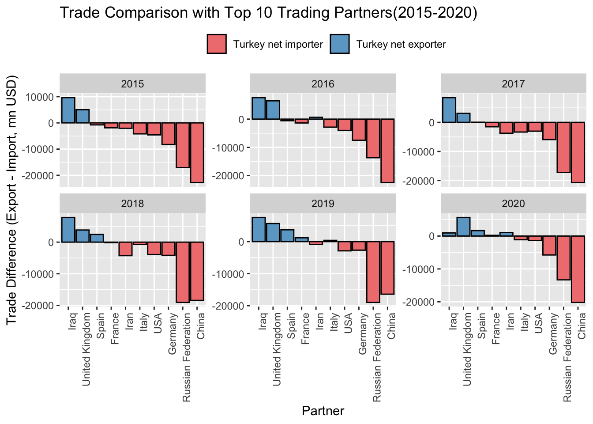
5.1.6 Trade Partnership Analysis
# Replace "YourFirstYear" and "YourEndYear" with the actual years that is selected for the analysisfirst_year <-2015end_year <-2020# Calculate the total trade value for the first and end years for each partnertotal_trade_by_partner <- read_wits_turkey_data_with_partners %>%group_by(partner_name) %>%summarise(total_trade_first =sum(trade_value_usd_imp[year == first_year] + trade_value_usd_exp[year == first_year]),total_trade_end =sum(trade_value_usd_imp[year == end_year] + trade_value_usd_exp[year == end_year]))# Find the top 10 partners based on the total trade valuetop_10_partners <- total_trade_by_partner %>%top_n(10, wt = total_trade_end)# Calculate the percentage changepercentage_change <- top_10_partners %>%mutate(percentage_change = ((total_trade_end/total_trade_first)^(1/5)-1)*100)# Create a lollipop chartggplot(percentage_change, aes(x =reorder(partner_name, percentage_change), y = percentage_change)) +geom_segment(aes(xend =reorder(partner_name, percentage_change), yend =0), color ="skyblue", size =1) +geom_point(color ="red", size =3) +labs(title ="Top 10 Partners: 5 year CAGR growth in Total Trade Value by 2020",x ="Partner",y ="5 year CAGR growth in Total Trade Value") +theme(axis.text.x =element_text(angle =90, hjust =1))
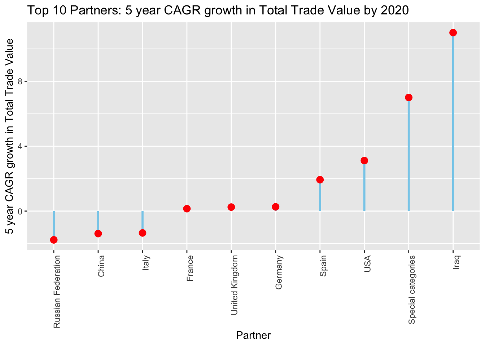
5.1.7 Trade Partnership Analysis by Product Categories
# Filter data for Iraq, Spain, and USAtrade_data_selected_partners<- read_wits_turkey_data_with_partners %>%filter(partner_name %in%c("Germany","Russian Federation","China", "United Kingdom", "Iraq", "Spain", "USA","Iran", 1))# Add a new column for total tradetrade_data_selected_partners <- trade_data_selected_partners%>%mutate(total_trade_exp = (trade_value_usd_exp)/19000000)# Group by section_name and calculate total trade values for each section_nametotal_trade_values_19_year <- trade_data_selected_partners %>%filter(year >=2002& year <=2020) %>%group_by(section_name, partner_name) %>%summarise(total_exp_value =sum(total_trade_exp))# Filter top 5 section namesfiltered_commodity_data <- total_trade_values_19_year %>%group_by(partner_name) %>%arrange(desc(total_exp_value)) %>%slice_head(n=5)# Truncate section names to the first 20 charactersfiltered_commodity_data$truncated_name <-str_trunc(filtered_commodity_data$section_name, 25)# Set up the color palettecolors <-brewer.pal(length(unique(filtered_commodity_data$truncated_name)), "Set3")# Map colors to truncated section namescolor_mapping <-setNames(colors, unique(filtered_commodity_data$truncated_name))# Use the color_mapping in ggplotggplot(filtered_commodity_data, aes(x = partner_name, y = total_exp_value, fill = truncated_name)) +geom_col() +scale_fill_manual(values = color_mapping) +# Set manual color scalelabs(title ="Annual Export Breakdown by Product Category and Partner (2002-2020)",x ="Partner Name", y ="Total Export mn USD",fill ="Sections") +geom_hline(yintercept =0, linetype ="solid", color ="black", size =0.5) +# Add horizontal line at y = 0theme(legend.position ="bottom") +guides(fill =guide_legend(nrow =4))
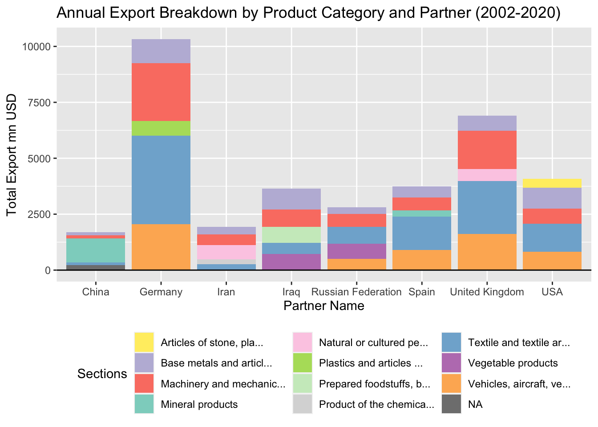
5.1.8 Trade Partnership Analysis by Product Categories
# Filter data for Iraq, Spain, and USAtrade_data_selected_partners<- read_wits_turkey_data_with_partners %>%filter(partner_name %in%c("Germany","Russian Federation","China", "United Kingdom", "Iraq", "Spain", "USA","Iran", 1))# Add a new column for total tradetrade_data_selected_partners <- trade_data_selected_partners%>%mutate(total_trade_imp = (trade_value_usd_imp)/19000000)# Group by section_name and calculate total trade values for each section_nametotal_trade_values_19_year <- trade_data_selected_partners %>%filter(year >=2002& year <=2020) %>%group_by(section_name, partner_name) %>%summarise(total_imp_value =sum(total_trade_imp))# Filter top 5 section namesfiltered_commodity_data <- total_trade_values_19_year %>%group_by(partner_name) %>%arrange(desc(total_imp_value)) %>%slice_head(n=5)# Truncate section names to the first 20 charactersfiltered_commodity_data$truncated_name <-str_trunc(filtered_commodity_data$section_name, 25)# Set up the color palettecolors <-brewer.pal(length(unique(filtered_commodity_data$truncated_name)), "Set3")# Map colors to truncated section namescolor_mapping <-setNames(colors, unique(filtered_commodity_data$truncated_name))# Use the color_mapping in ggplotggplot(filtered_commodity_data, aes(x = partner_name, y = total_imp_value, fill = truncated_name)) +geom_col() +scale_fill_manual(values = color_mapping) +# Set manual color scalelabs(title ="Average Annual Import Breakdown by Product Category and Partner (2002-2020)",x ="Partner Name", y ="Total Import mn USD",fill ="Sections") +geom_hline(yintercept =0, linetype ="solid", color ="black", size =0.5) +# Add horizontal line at y = 0theme(legend.position ="bottom") +guides(fill =guide_legend(nrow =4))